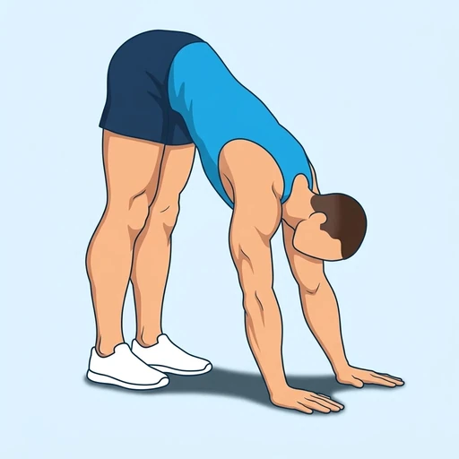
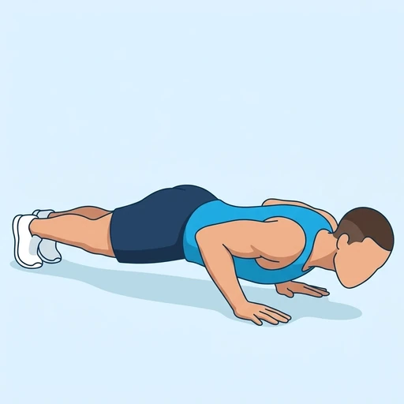

Inchworm
A bodyweight warm-up and mobility drill: from a standing forward fold you walk your hands out along the floor until your body is in a low plank, with the elbows bent as at the bottom of a push-up, then walk them back toward your feet. It stretches the hamstrings and calves while the shoulders, chest and trunk hold the low plank.
Full body · Bodyweight · Beginner


Muscles worked by the Inchworm
Primary
Secondary
Also called: hamstring, hamstrings, posterior thigh, biceps femoris.
Equipment
No equipment — this is a bodyweight exercise.
How to do the Inchworm
- Stand tall with your feet about hip-width apart.
- Hinge forward at the hips and place your hands on the floor in front of your feet, bending the knees slightly if you need to.
- Walk your hands forward one at a time, keeping your legs as straight as you comfortably can, until your body is in a straight line close to the floor.
- Bend your elbows so your chest hovers just above the floor, as at the bottom of a push-up, and pause briefly with your trunk braced.
- Walk your hands back toward your feet in small steps, raising your hips, until you are back in the forward fold.
- Stand up, or go straight into the next repetition.
Form tips
- Keep the knees as straight as you can so the hamstrings and calves get the stretch; a slight bend is fine if your hands do not reach the floor.
- Brace the trunk in the low plank so the hips do not sag or pike up. For an easier version, stop in a straight-arm plank and skip the lowering.
- Take small, controlled steps; walking out too far, too fast makes you collapse onto the floor.
At a glance
| Body part | Full body |
|---|---|
| Category | Strength |
| Force type | Dynamic |
| Mechanic | Compound |
| Difficulty | Beginner |
| Equipment | Bodyweight |
| Goals | Endurance, Mobility |
| Tags | Full body, Core, Calisthenics, Knee safe, No axial load |
| MET | 5.0 (metabolic equivalent, for calorie estimates) |
| Unilateral | No |
| Bodyweight | Yes |
| Dataset id | inchworm |
Inchworm in German & Spanish
| German | Inchworm |
|---|---|
| Spanish | Inchworm |
Descriptions, instructions and tips ship in all three languages in the JSON.
Related exercises
Exercise data (JSON)
The record below is exactly what exercises.json ships for this exercise — names, descriptions, instructions and tips in English, German and Spanish.
{
"id": "inchworm",
"name_en": "Inchworm",
"name_de": "Inchworm",
"name_es": "Inchworm",
"description_en": "A bodyweight warm-up and mobility drill: from a standing forward fold you walk your hands out along the floor until your body is in a low plank, with the elbows bent as at the bottom of a push-up, then walk them back toward your feet. It stretches the hamstrings and calves while the shoulders, chest and trunk hold the low plank.",
"description_de": "Eine Aufwärm- und Mobilisationsübung mit dem Körpergewicht: Aus der stehenden Vorbeuge läufst du mit den Händen am Boden nach vorn, bis dein Körper im tiefen Plank ist, die Ellbogen gebeugt wie ganz unten im Liegestütz, und läufst dann wieder zu den Füßen zurück. Sie dehnt die Beinbeuger und Waden, während Schultern, Brust und Rumpf den tiefen Plank halten.",
"description_es": "Un ejercicio de calentamiento y movilidad con el peso corporal: desde una flexión hacia delante de pie, caminas con las manos por el suelo hasta que el cuerpo queda en plancha baja, con los codos flexionados como en el punto más bajo de una flexión de brazos, y luego las caminas de vuelta hacia los pies. Estira los isquiotibiales y las pantorrillas mientras los hombros, el pecho y el tronco sostienen la plancha baja.",
"category": "strength",
"force_type": "dynamic",
"mechanic": "compound",
"difficulty": "beginner",
"body_part": "full_body",
"primary_muscles": [
"hamstrings"
],
"secondary_muscles": [
"anterior_deltoid",
"gastrocnemius",
"pectoralis_major",
"rectus_abdominis",
"serratus_anterior",
"triceps_brachii"
],
"goals": [
"endurance",
"mobility"
],
"tags": [
"full_body",
"core",
"calisthenics",
"knee_safe",
"no_axial_load"
],
"is_unilateral": false,
"is_bodyweight": true,
"instructions_en": [
"Stand tall with your feet about hip-width apart.",
"Hinge forward at the hips and place your hands on the floor in front of your feet, bending the knees slightly if you need to.",
"Walk your hands forward one at a time, keeping your legs as straight as you comfortably can, until your body is in a straight line close to the floor.",
"Bend your elbows so your chest hovers just above the floor, as at the bottom of a push-up, and pause briefly with your trunk braced.",
"Walk your hands back toward your feet in small steps, raising your hips, until you are back in the forward fold.",
"Stand up, or go straight into the next repetition."
],
"instructions_de": [
"Stelle dich aufrecht hin, die Füße etwa hüftbreit auseinander.",
"Beuge dich aus der Hüfte nach vorn und setze die Hände vor den Füßen auf den Boden; beuge die Knie leicht, wenn nötig.",
"Laufe mit den Händen abwechselnd nach vorn und halte die Beine dabei so gestreckt, wie es dir angenehm möglich ist, bis dein Körper eine gerade Linie dicht über dem Boden bildet.",
"Beuge die Ellbogen, sodass deine Brust knapp über dem Boden schwebt wie ganz unten im Liegestütz, und halte kurz inne, den Rumpf angespannt.",
"Laufe mit den Händen in kleinen Schritten zurück zu den Füßen und hebe dabei die Hüfte, bis du wieder in der Vorbeuge bist.",
"Richte dich auf oder gehe direkt in die nächste Wiederholung."
],
"instructions_es": [
"Ponte de pie, erguido, con los pies separados aproximadamente al ancho de las caderas.",
"Flexiónate hacia delante desde las caderas y apoya las manos en el suelo delante de los pies, flexionando un poco las rodillas si lo necesitas.",
"Camina con las manos hacia delante, una tras otra, manteniendo las piernas lo más estiradas que puedas con comodidad, hasta que el cuerpo quede en línea recta cerca del suelo.",
"Flexiona los codos para que el pecho quede justo por encima del suelo, como en el punto más bajo de una flexión de brazos, y haz una breve pausa con el tronco firme.",
"Camina con las manos de vuelta hacia los pies con pasos cortos, elevando las caderas, hasta volver a la flexión hacia delante.",
"Levántate o pasa directamente a la siguiente repetición."
],
"tips_en": [
"Keep the knees as straight as you can so the hamstrings and calves get the stretch; a slight bend is fine if your hands do not reach the floor.",
"Brace the trunk in the low plank so the hips do not sag or pike up. For an easier version, stop in a straight-arm plank and skip the lowering.",
"Take small, controlled steps; walking out too far, too fast makes you collapse onto the floor."
],
"tips_de": [
"Halte die Knie so gestreckt wie möglich, damit Beinbeuger und Waden gedehnt werden; eine leichte Beugung ist in Ordnung, wenn deine Hände den Boden nicht erreichen.",
"Spanne den Rumpf im tiefen Plank an, damit die Hüfte weder durchhängt noch nach oben ausweicht. Für eine leichtere Variante bleibst du im Plank mit gestreckten Armen und lässt das Absenken weg.",
"Mache kleine, kontrollierte Schritte; wer zu weit und zu schnell nach vorn läuft, sackt auf den Boden."
],
"tips_es": [
"Mantén las rodillas lo más estiradas que puedas para que los isquiotibiales y las pantorrillas reciban el estiramiento; una ligera flexión está bien si las manos no llegan al suelo.",
"Aprieta el tronco en la plancha baja para que las caderas no se hundan ni se eleven. Para una versión más fácil, detente en una plancha con los brazos estirados y omite el descenso.",
"Da pasos cortos y controlados; caminar demasiado lejos y demasiado rápido hace que acabes desplomándote en el suelo."
],
"met": 5.0,
"images": {
"flat": {
"start": "images/flat/inchworm-start.webp",
"peak": "images/flat/inchworm-peak.webp"
}
}
}Fetch just this exercise
const { exercises } = await fetch(
"https://exercise-dataset.com/exercises.json"
).then(r => r.json());
const ex = exercises.find(e => e.id === "inchworm");Free for personal and commercial in-app use with attribution (“Exercise data by RepDB”) — see the license and ready-made attribution snippets. Redistributing the data as a dataset or API is not permitted.